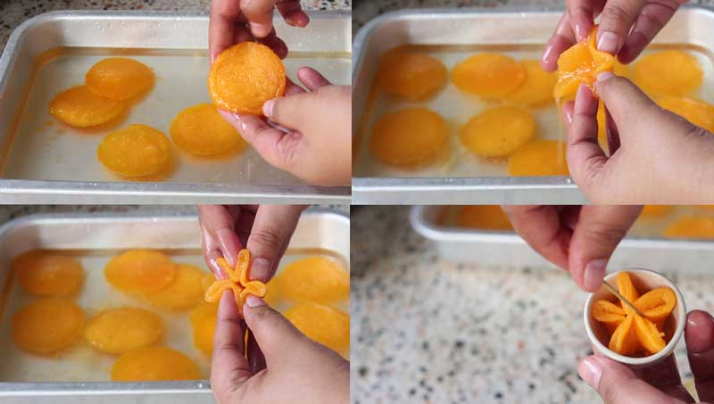
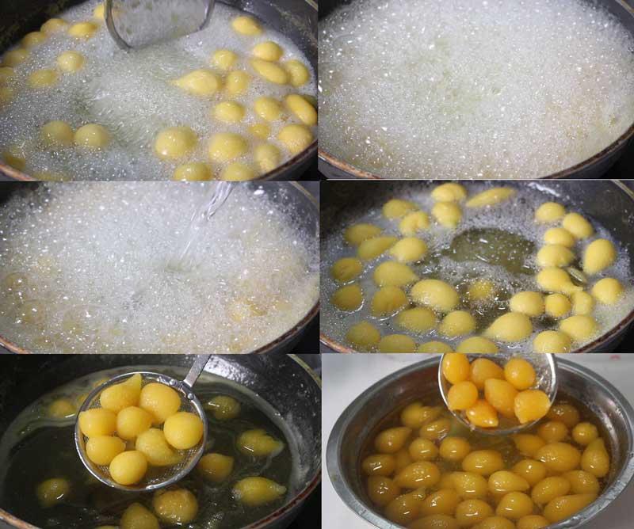
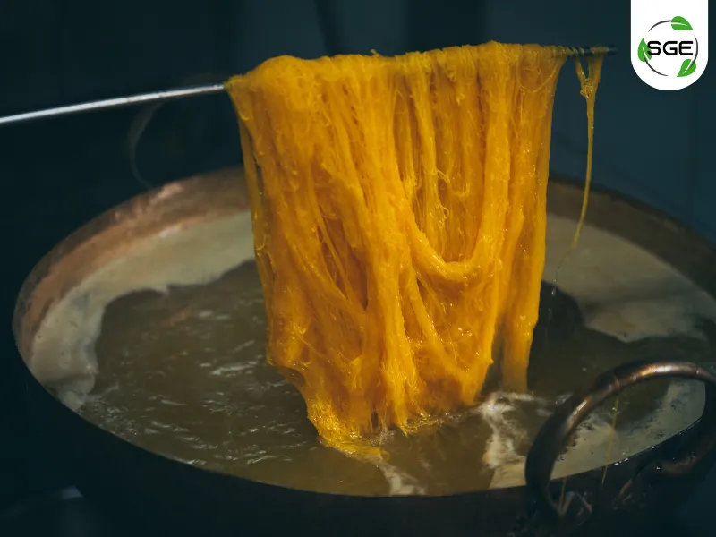
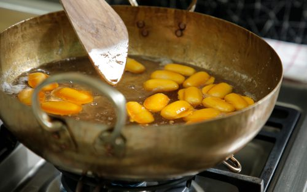
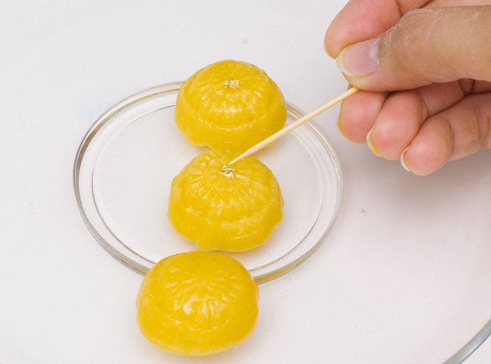
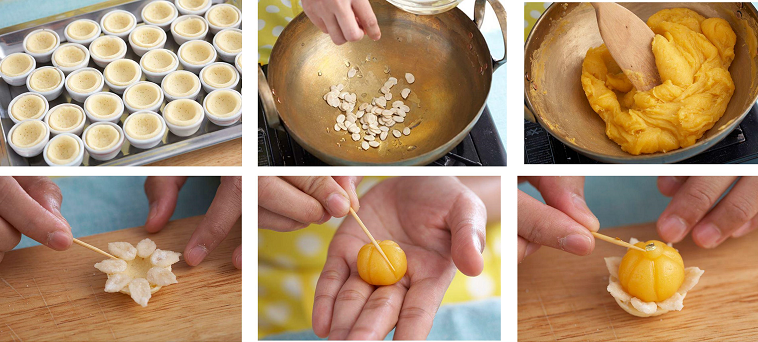
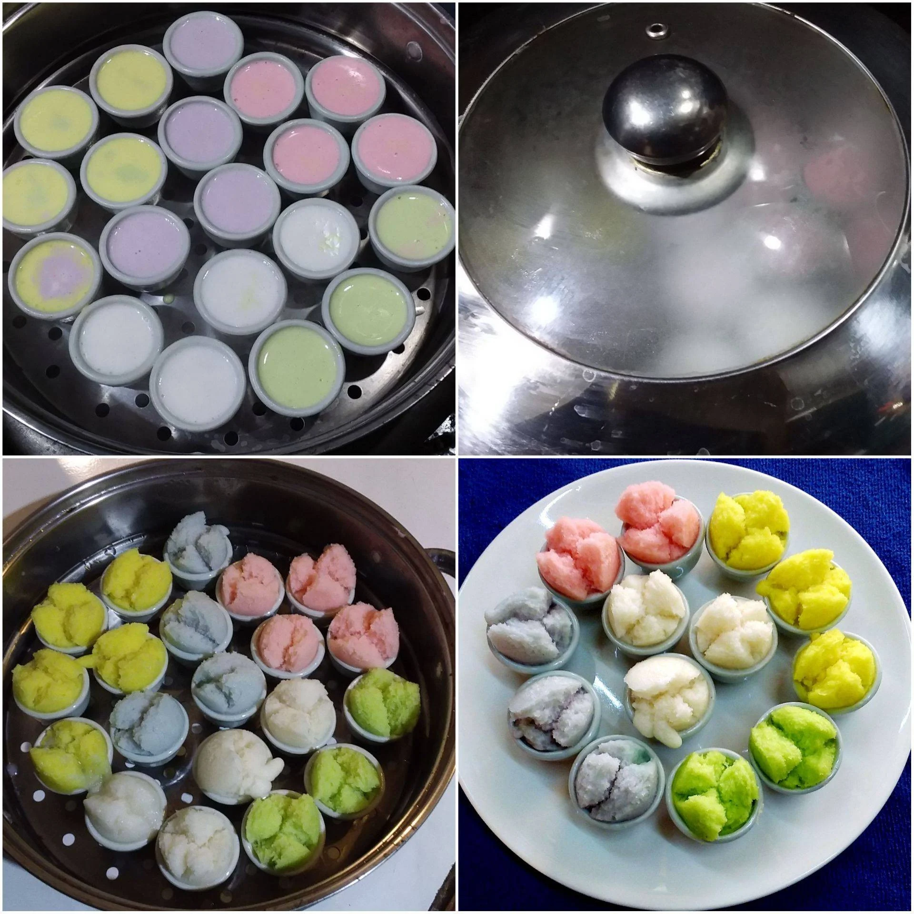
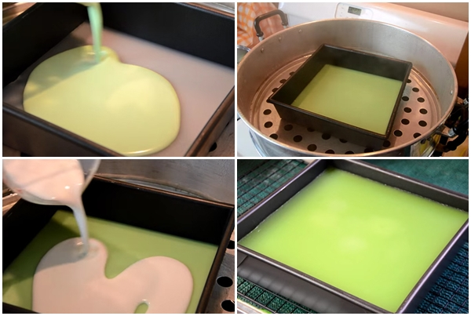
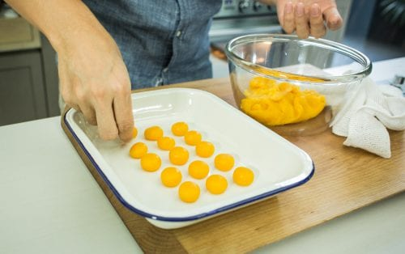

วิธีทำทองหยิบ
วัตถุดิบ
- ไข่แดงของไข่เป็ด 4 ฟอง
- น้ำเปล่า 3 ถ้วย
- น้ำตาลทราย 1 1/2 ถ้วย
ขั้นตอน
- เตรียมน้ำเชื่อมโดยนำน้ำเปล่าและน้ำตาลทรายใส่หม้อ ตั้งไฟกลาง คนจนน้ำตาลละลาย พอเดือดลดเป็นไฟอ่อน
ต้มต่อประมาณ 10 นาที แล้วยกลงพักให้เย็น
- เทน้ำเชื่อมลงกระทะทองเหลือง ใช้ไฟกลาง พอร้อนแต่ไม่ให้เดือดพล่าน
- ตีไข่แดงให้ขึ้นฟู หยอดลงในน้ำเชื่อม พอสุกตักขึ้น พักให้เย็นแล้วจับจีบให้สวยงาม

วิธีทำทองหยอด
วัตถุดิบ
- ไข่แดงไข่เป็ด 9 ฟอง
- ไข่แดงไข่ไก่ 3 ฟอง
- แป้งทองหยอด 30 กรัม
ขั้นตอน
- แยกไข่แดงออกจากไข่ขาว กรองจนหมดไข่ขาว
- ตีไข่แดงให้ขึ้นฟูประมาณ 8 นาที ใส่แป้งแล้วตะล่อมเบา ๆ
- ต้มน้ำเชื่อมให้เดือด หยอดไข่ลงไป รอจนสุกลอยขึ้น
- ตักทองหยอดแช่น้ำเชื่อมใส 5–10 นาที แล้วพักให้สะเด็ดน้ำ

วิธีทำฝอยทอง
วัตถุดิบ
- ไข่เป็ด 6 ฟอง
- ไข่ไก่ 3 ฟอง
- น้ำตาลทราย 1 กิโลกรัม
- น้ำลอยดอกมะลิ 1,000 มิลลิลิตร
- ใบเตย 4 ใบ
ขั้นตอน
- แยกไข่แดง ตีให้เข้ากันแล้วกรองด้วยผ้าขาวบาง
- ต้มน้ำเชื่อมกับใบเตยจนเหนียวข้น
- โรยไข่แดงเป็นเส้นลงในน้ำเชื่อมจนสุก
- พับฝอยทองและพักให้สะเด็ดน้ำ

วิธีทำเม็ดขนุน
วัตถุดิบ
- ถั่วเขียวเลาะเปลือกนึ่งและบด 250 กรัม
- น้ำตาลทราย 80 กรัม (สำหรับทำไส้ถั่ว)
- กะทิ 150 มิลลิลิตร
- ไข่แดงของไข่เป็ด 3 ฟอง
- น้ำเปล่า 3 ถ้วยตวง
- น้ำตาลทราย 3 ถ้วยตวง (สำหรับทำน้ำเชื่อม)
- ใบเตยมัด 1 มัด
- กลิ่นมะลิ ½ ช้อนชา
ขั้นตอน
- เทถั่วเขียวนึ่งและบดเรียบร้อยแล้วลงในกระทะ ตามด้วยน้ำตาลทราย (สำหรับทำไส้ถั่ว) และกะทิลงไป
ผัดด้วยไฟกลางจนส่วนผสมทั้งหมดเข้ากันและแห้งดีแล้วปิดเตา
- นวดขนมอีกครั้งให้เป็นก้อนแล้วพักไว้รอให้อุ่น ๆ จากนั้นปั้นขนมเป็นก้อน ๆให้มีลักษณะเหมือนเม็ดขนุน
- ใส่น้ำ น้ำตาลทราย (สำหรับทำน้ำเชื่อม) ใบเตยมัด และกลิ่นมะลิลงในกะทะทองเหลือง
หรือภาชนะก้นลึกที่สามารถตั้งไฟได้ เคี่ยวน้ำเชื่อมจนเหนียวเป็นยางมะตูมแล้วปิดไฟ
- ตีไข่แดงให้พอแตก นำแป้งที่ปั้นเป็นเม็ดขนุนลงไปชุบไข่แดงให้ทั่ว แล้วหยอดลงไปในหม้อน้ำเชื่อจนหมด
- เสร็จแล้วจึงนำน้ำเชื่อมกลับไปตั้งไฟ โดยใช้ไฟอ่อนอีกครั้ง ขั้นตอนนี้จะต้องให้น้ำเชื่อมนิ่งไม่มีการเดือดใด
ๆ
- เมื่อขนมสุกแล้วก็ใช้กระชอนตักขึ้นมาเสิร์ฟในจาน เท่านี้ก็เสร็จเรียบร้อยแล้วจ้า

วิธีทำทองเอก
วัตถุดิบทองเอก
- แป้งสาลีอเนกประสงค์ 2+1/2 ถ้วย
- กะทิ 2+1/2 ถ้วย
- น้ำตาลทราย 2+1/2 ถ้วย
- ไข่ไก่ (เฉพาะไข่แดง) 14 ฟอง
- แป้งเท้ายายม่อม 2 ช้อนโต๊ะ
- แบบพิมพ์สำหรับกดขนม
- แผ่นทองคำเปลว (ตกแต่ง)
ขั้นตอน
- ใส่กะทิและน้ำตาลทรายลงในกระทะทองเหลือง นำขึ้นตั้งไฟปานกลาง ต้มจนเดือดแล้วกรองด้วยผ้าขาว
เสร็จเคี่ยวต่อจนข้น ปิดไฟ พักไว้ให้เย็น
- ใส่ไข่แดงลงไป คนให้เข้ากัน ยกส่วนผสมขึ้นตั้งไฟอ่อนกวนจนร้อน
- ค่อย ๆ ใส่แป้งลงไปจนหมด กวนจนส่วนผสมร่อนจากกระทะ ปิดไฟ พักไว้ให้อุ่น
- ตักขนมอัดเข้าพิมพ์ให้แน่นแล้วเคาะออก
- แต่งหน้าขนมด้วยเศษทองคำเปลว

วิธีทำขนมดาราทอง
วัตถุดิบดาราทอง
- แป้งสาลีอเนกประสงค์ 1 ถ้วยตวง
- ไข่แดงไข่ไก่ 1 ฟอง
- น้ำเปล่า 1 ช้อนโต๊ะ
- เมล็ดแตงโมแกะ ¼ ถ้วยตวง
- น้ำเชื่อม ½ ถ้วยตวง
- ทองคำเปลวตัดเป็นแผ่นเล็ก
- ไข่แดงไข่ไก่ 5 ฟอง
- แป้งสาลีอเนกประสงค์ 1 ถ้วยตวง
- กะทิ 1+½ ถ้วยตวง
- น้ำตาลทราย 1 ถ้วยตวง
ขั้นตอน
- ทำฐานแป้งสำหรับรองขนม โดยนวดแป้ง ไข่แดง และน้ำเปล่า พอแป้งนุ่ม แล้วจัดการคลึงแป้งให้เป็นแผ่นบาง
ตัดเป็นแผ่นกลม ใส่ลงในถ้วยตะไล ใช้ไม้จิ้มให้ทั่ว
- นำเข้าเตาอบที่อุณหภูมิ 150 องศาเซลเซียส ประมาณ 20 นาที หรืออบจนแป้งเหลืองกรอบ นำแป้งออกจากถ้วย พักไว้
- นำกระทะทองตั้งไฟอ่อน ใส่เมล็ดแตงโมลงไป
- ใช้มือแตะน้ำเชื่อมแล้วพรมไปที่เมล็ดแตงโม กวาดน้ำเชื่อมกับเมล็ดแตงโมไปเรื่อย ๆ
จนกว่าน้ำตาลจะเกาะที่เมล็ดแตงโมเป็นตะปุ่มตะป่ำ หรือเป็นหนาม พักไว้
- ผสมไข่ไก่ แป้งสาลีอเนกประสงค์ กะทิ และ น้ำตาลทราย ให้เข้ากัน แนะนำให้ใช้เครื่องผสมอาหารเพื่อความรวดเร็ว
- นำส่วนผสมใส่กระทะ กวนด้วยไฟอ่อนที่สุดจนขนมไม่ติดมือ
- ปั้นทองเอกเป็นก้อนกลม ๆ ใช้ไม้จิ้มฟันกดเป็น 6 พู (6 แฉก) เตรียมไว้
- ติดเม็ดแตงโมโดยรอบแป้งรอง วางทองเอกด้านบนแล้วใช้ทองเอกปั้นเป็นเม็ดกลมเล็ก ๆ วางบนยอดมงกุฎ
ติดแผ่นทองด้านบน
- นำไปจัดใส่จานให้สวยงาม พร้อมเสิร์ฟ

วิธีทำถ้วยฟู
วัตถุดิบถ้วยฟู
- ข้าวหอมมะลินึ่งสุก 160 กรัม
- น้ำเปล่า 670 กรัม
- กลิ่นมะลิ 1 ช้อนชา
- แป้งข้าวเจ้า 420 กรัม
- น้ำตาลทราย 340 กรัม
- ยีสต์ 1 ช้อนชา
- ผงฟู 4 ช้อนชา
- สีผสมอาหารตามชอบ
ขั้นตอน
- ใส่ข้าวสุกลงในเครื่องปั่น เติมน้ำเล็กน้อย ปั่นจนละเอียด พักไว้
- ผสมน้ำเปล่ากับกลิ่นมะลิ เตรียมไว้ หรือใช้น้ำลอยดอกมะลิก็ได้
- ใส่แป้งลงในอ่างผสม ตามด้วยน้ำตาลทราย ผงฟู และยีสต์ ใส่ข้าวที่ปั่นแล้วลงไป นวดส่วนผสมทั้งหมดให้เข้ากัน
ระหว่างนวดก็ค่อย ๆ ทยอยเติมน้ำลงไปจนหมด
- แบ่งส่วนผสมแป้งใส่สีผสมอาหารตามชอบ คลุมด้วยพลาสติกถนอมอาหาร พักไว้ประมาณ 2-3 ชั่วโมงหรือจนขึ้นฟู
พอพักจนครบเวลาแล้วค่อยคนส่วนผสมแป้งให้เข้ากัน
- ตั้งน้ำในลังถึง ตั้งไฟรอไว้ วางเรียงถ้วยตะไล หยอดแป้งลงไปในถ้วย เสร็จแล้ว
พอน้ำเดือดนำไปนึ่งด้วยไฟแรงประมาณ 20 นาที พอสุกนำออกมาวางพักจนเย็นแล้วค่อยนำออกจากพิมพ์

วิธีทำขนมชั้น
วัตถุดิบขนมชั้น
- น้ำตาลทราย 2+1/2 ถ้วย
- น้ำกะทิ 4 ถ้วย
- แป้งข้าวเจ้า 1/2 ถ้วย
- แป้งมันสำปะหลัง 1/2 ถ้วย
- แป้งเท้ายายม่อม 1+1/2 ถ้วย (หรือแป้งถั่วเขียว)
- น้ำใบเตยคั้นเข้มข้น 1/2 ถ้วย
- น้ำหอมกลิ่นมะลิผสมน้ำ 1/2 ถ้วย
ขั้นตอน
- ใส่น้ำตาลทรายและกะทิลงในหม้อ คนผสมให้เข้ากันแล้วนำขึ้นตั้งไฟปานกลางประมาณ 5 นาที จนน้ำตาลทรายละลาย
(ไม่ต้องรอให้เดือด) ยกลงจากเตา พักทิ้งไว้จนเย็น
- นึ่งถาดหรือพิมพ์ในชุดนึ่งที่มีน้ำเดือด ประมาณ 15 นาที เตรียมไว้
- ผสมแป้งข้าวเจ้า แป้งมันสำปะหลัง และแป้งเท้ายายม่อม เข้าด้วยกัน ค่อย ๆ เทส่วนผสมน้ำกะทิลงไป
ใช้มือนวดแป้งให้เข้ากันเป็นเนื้อเดียว นวดประมาณ 15 นาที จนแป้งไม่จับตัวเป็นก้อน
- จากนั้นนำไปกรองด้วยตะแกรง
- แบ่งแป้งเป็น 2 ถ้วย โดยถ้วยที่ 1 ผสมกับน้ำใบเตย และถ้วยที่ 2 ผสมกับน้ำมะลิ คนผสมให้เข้ากัน เตรียมไว้
- ทำชั้นที่ 1 โดยเทส่วนผสมสีขาว (เทส่วนผสมทุกชั้นประมาณ 1/3 ถ้วย) ลงในพิมพ์ ปิดฝา นึ่งประมาณ 5 นาที
เปิดฝาแล้วเทส่วนผสมสีเขียวลงไป ปิดฝา นึ่งประมาณ 5 นาที ทำซ้ำเช่นเดิม สลับชั้นกันจนหมดแป้ง จะได้ประมาณ
9-10 ชั้น โดยชั้นสุดท้าย ให้นึ่งประมาณ 7 นาที ยกออกจากชุดนึ่ง วางพักทิ้งไว้จนเย็นสนิท (ประมาณ 3 ชั่วโมง)
- นำขนมออกจากถาด จุ่มมีดลงในน้ำร้อน กดลงบนขนมเป็นชิ้น ๆ จัดใส่จาน พร้อมเสิร์ฟ

วิธีทำเสน่ห์จันทน์
วัตถุดิบเสน่ห์จันทน์
- แป้งสาลีอเนกประสงค์100 กรัม
- แป้งเท้ายายม่อม10 กรัม
- ไข่แดงไข่ไก่6 ฟอง
- หัวกะทิ230 กรัม
- น้ำตาลทราย160 กรัม
- สีผสมอาหารสีเหลือง และสีน้ำตาล
ขั้นตอน
- ตีไข่แดงและน้ำตาลทรายเข้าด้วยกัน ร่อนแป้งสาลี และแป้งเท้ายายม่อมใส่ลงไป แต่งด้วย สีเหลืองเล็กน้อย
ตีให้เข้ากันดี ใส่กะทิลงไปทีละน้อยจนหมด กรองส่วนผสมใส่กระทะทอง ยกขึ้นตั้งไฟอ่อน
กวนจนแป้งจับตัวกันเป็นก้อนเนียนใส คลุมส่วนผสมด้วยผ้าขาวบางจนพอ อุ่นดี (วิธีทำแบบเก่า
จะนำกะทิและน้ำตาลไปเคี่ยวให้หนึบเป็นยางมะตูมก่อน พักให้เย็นลง เล็กน้อย แล้วค่อย ๆ ผสมไข่แดงลงไป ใส่แป้ง
แล้วถึงกวน ซึ่งผลลัพธ์ที่ได้แทบไม่ต่างกัน)
- ปั้นส่วนผสมเป็นก้อนกลมเส้นผ่าศูนย์กลาง 1.5 เซนติเมตร กดให้แบนลงเล็กน้อย
- แบ่งส่วนผสมออกมาเล็กน้อย ใส่สีน้ำตาลลงไป นวดให้เนียนดี ทำขั้วลูกจัน โดยนำส่วนผสม สีน้ำตาล
ปั้นเป็นเส้นยาวเล็ก ๆ แล้วขดเป็นวงกลม ติดเป็นขั้วเสน่ห์จันทน์
- เสน่ห์จันทน์เก็บได้โดยไม่ต้องแช่เย็นประมาณ 5 วัน
